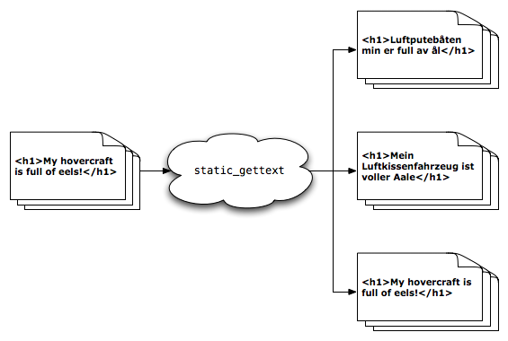

static_gettext: Localization for Static Documents
static_gettext is an internationalization framework for static, plaintext
documents and templates. It's geared towards straightforward translation
of static websites, but can be easily used for any set of files you'd like
to translate as a group.
Implemented as a thin wrapper around the GNU gettext project,
static_gettext produces standard message files that any translator can
easily work with. After translation, these files can be used to generate
localizations for your world-wide audience.
After installing the script, getting up and running is trivial. Let's take a quick look at the example project to get our bearings:
Markup: Documents to be localized are placed into the project's src
directory, and marked up for future translation by wrapping strings of
translatable text in {% blocktrans %}...{% endblocktrans %}
tags.
Extraction: These translatable strings are extracted from the source
documents into message files in standard gettext format. A single
message file containing all translation strings is generated for each
target language as locale/[TARGET]/LC_MESSAGES/messages.po by running
the following command from the project root:
static_gettext.py --languages LANG_1,LANG_2,... --make-messages
Build: After translation, the *.po files are updated with the
localized strings and compiled into a *.mo binary format for quick
lookup. These binary files are then used to generate localized versions
of the project as build/[TARGET]/* by running the following from the
project root:
static_gettext.py --languages LANG_1,LANG_2,... --build